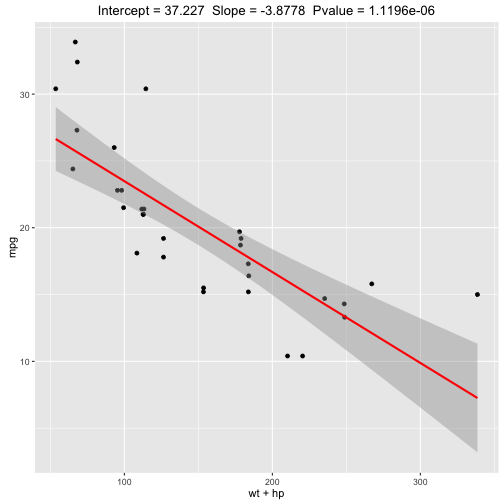

How many times has this happened to you...
You wanted to compare different combinations of mtcars coefficients but did not want to spend your day re-computing the linear models or re-drawing the plots.
Well...your solution is here
Don Resnik
Software Engineer
How many times has this happened to you...
You wanted to compare different combinations of mtcars coefficients but did not want to spend your day re-computing the linear models or re-drawing the plots.
Well...your solution is here
The coefficient chooser uses Shiny to build the dynamic user interface, compute the linear model and plot the results
The real magic is the conversion of the list of selected checkboxes into the '+' separated list syntax for the coefficients for the linear model: lm(mpg ~ [checkbox list])
inputList <- reactive({req(input$id1)
paste(input$id1,collapse="+")})
